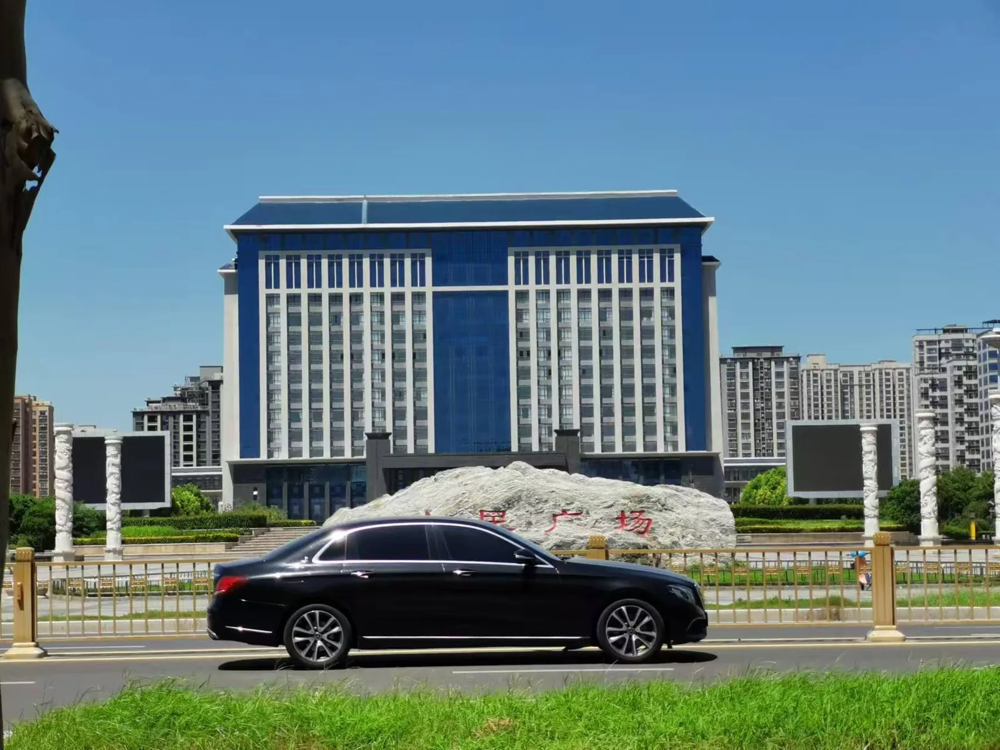

野火
天空是什么颜色？在低头走路的日子里，缺少观察便不知该如何回答，只说是蓝色，索然无味了些。地面上的枯叶，忧郁的拢在一团，面容惨淡。没有一片正经树叶是想要脱离安全又高高在上的树枝的。现在，它们躺在地上，被太阳晒得卷起了边，毫无用处的沉默着。怪可惜的，叶面平整些才更具美感，加工后还可拿来用作书签。
这条街道很浪漫，被两排树亲密的护卫着。不确定是悬铃木还是梧桐，但，是悬铃木的概率大些。 南京城有一条浪漫的街道，就是去美龄宫的那个梧桐大道，蒋介石专门为宋美龄栽种下的梧桐。那些梧桐树高大笔直的生长，清晨的阳光只能透过叶间极力找缝隙洒向地面，这时候切割现实世界的丁达尔效应会出现。 在北京西路和宁海路交界的十字路口处，站在北京西路，找好角度，能看到一个由树叶的缝隙刚好描摹的爱心。这树叶的告白，更为南京的浪漫涂抹一点亮色。虽比不得梧桐大道，我们的悬铃木大道，在深夏时候，一样茂盛的遮天蔽日，在树荫下看不见天空。

这是人民广场前面的一条街道，也就是悬铃木大道。趁着傍晚的落日余晖，天边刚好出现了晚霞，在街上散步是最舒服的，有种缓慢流淌的祥和静美在画面里头，过了这个点只会变得吵闹。 人们总不爱在夜晚即将来临的时候独自呆在枯燥建筑里，所以选择在饭后出门走走。
今天立秋，但怎么还是这么热呢。这波余热，只能随着一场又一场的雨才能散去。她的二十几岁逐渐加速，很快就到27岁的生日了。而有的人永远年轻，永远停留在27岁。科特柯本的穿搭很适合即将到来的季节，慵懒随意。白t搭衬衫or针织衫，穿一条牛仔裤，简单的配色最是出彩。她住的小区地理位置很好，悬铃木大道就在小区与广场的中间，是她在建筑里待不下去时候的散步首选。有些时候她会在傍晚出门，大多时候是在这条街还很吵闹的时候出门。 沿着人行道一直走到人声静下来。尽管人声有所减少，但是分贝反而更高了，广场上的露天小型卡拉OK一直很热闹，但是千万别指望听到让人满意的歌喉。广场总与伤心情歌和迪斯科形影不离，好像也离不了凤凰传奇。
走了很远，惊觉再也没有贩卖西瓜的商贩。就在不久前，总听很卖力的小喇叭吆喝，循环着不甜不要钱，不甜不要钱。这句话没有一点可信度。 每一家瓜农，甚至不限于瓜，都会说上一句不甜不要钱，不止在河南，北京也是如此。她曾在下班后在北京街头遇到甜瓜刺客，商贩吆喝的台词还是这句不甜不要钱。按耐不住想要吃瓜的馋劲，就会不管不顾的买一个回家。挑选瓜没有技巧，看的顺眼就说老板这瓜你看多钱。
突然想起多莉，是的，那只96年7月出生的克隆羊，那只令世界为之一震的动物。梅卡德尔在寻找多莉里面唱道：他们在摩西山上看见了一只绵羊。这种看见是福是祸很难去说。她并不想用区别于其他羊的视角去思考多莉，她觉得自己就是多莉。遥远的看着自己的缺陷，清楚的知道别人眼里自己的完整，这种割裂一直伴随着她，难以融合。不过，这什么也不影响，所以不妨事。 小时候跟随爷爷奶奶在乡下的院子里，饲养过五六只羊，曾有过喂小羊吃草，与小羊欢快玩耍的童年。现在，羊已经消失，爷爷奶奶已经消失，院子也正在消失，她却一直不能停止想念。这种感觉像西西弗斯，而久远的记忆就像滚石，她一遍一遍的驮着下坠的石头上山。
描述真实的句子并非真实的样子，那些藏着没说的是真实的另一面。说是要坦诚，要诚实，可她对自己从未如此。内心的情感与头脑的理智总是在碰撞。想做些什么事，想说些什么话，想爱些什么人，都需得掂量一下是否妥当可行。 于是言与行经常不能够保持一致。内心这把火没有把理智烧的干净，挣扎着，是再添些柴，还是任由它熄灭。这也并不完全取决于她。因为火也有其意志，它会竭尽所能的吞噬一切可燃之物来壮大自己的力量。